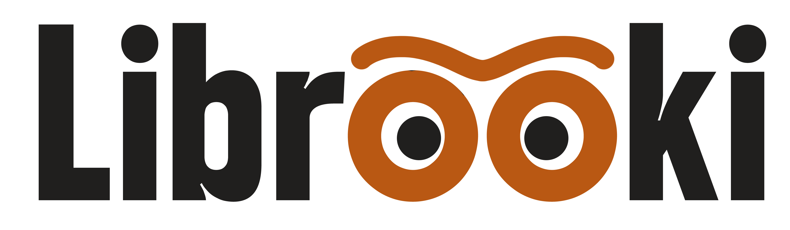

Última actualización: 20 de julio de 2026
El responsable del tratamiento de tus datos personales es:
Para cualquier cuestión sobre tus datos o esta política, escríbenos a ese correo.
Recogemos únicamente los datos necesarios para que Librooki funcione:
| Dato | Para qué lo usamos | Base legal |
|---|---|---|
| Email y contraseña (la contraseña se guarda cifrada) | Crear y proteger tu cuenta, iniciar sesión | Ejecución del contrato |
| Nombre de usuario, avatar y código de amigo (el avatar es una ilustración que eliges de una colección predefinida de la app; no es una foto tuya) | Mostrar tu perfil a tus amigos e identificarte en la app | Ejecución del contrato |
| Tu biblioteca: libros, autores, portadas (incluidas fotos que tú hagas), géneros, valoraciones y notas personales | Guardar y mostrar tu colección | Ejecución del contrato |
| Tus Deseados (lista privada): títulos, autores, notas y, si la añades, una foto del libro que quieres comprarte | Guardar tu lista de libros deseados. Es privada: solo tú la ves | Ejecución del contrato |
| Préstamos: quién presta qué a quién, fechas y estados | Gestionar los préstamos entre usuarios | Ejecución del contrato |
| Datos de personas a las que invitas por email (nombre y correo que tú introduces) | Enviar la invitación o el préstamo | Ejecución del contrato / interés legítimo |
| Amistades y preferencias de compartir biblioteca | Conectarte con otros usuarios | Ejecución del contrato |
| Token de notificaciones del dispositivo | Enviarte avisos de préstamos y recordatorios | Consentimiento (tú activas las notificaciones) |
| Reportes de contenido (si reportas algo: qué, quién y por qué) | Moderar contenido y mantener la seguridad | Interés legítimo |
| Acceso a la cámara | Fotografiar portadas y escanear el ISBN de un libro | Consentimiento (tú concedes el permiso) |
No recogemos datos con fines publicitarios, no usamos rastreadores de publicidad ni vendemos tus datos a terceros.
No vendemos ni cedemos tus datos. Solo los tratan, por nuestra cuenta y bajo contrato, los proveedores tecnológicos que hacen funcionar la app («encargados del tratamiento»):
Al buscar un libro por ISBN, la consulta la hace nuestro servidor a catálogos bibliográficos públicos (Open Library, Google Books, Biblioteca Nacional de España) sin enviarles ningún dato personal tuyo: solo el ISBN o título.
Algunos de estos proveedores pueden tratar datos fuera de la Unión Europea. En ese caso, la transferencia se ampara en las garantías previstas por la normativa (cláusulas contractuales tipo o marcos de adecuación).
Puedes ejercer en cualquier momento estos derechos escribiendo a librookiapp@gmail.com:
Responderemos en los plazos que marca la ley. Si consideras que no hemos atendido bien tu solicitud, puedes reclamar ante la Agencia Española de Protección de Datos (AEPD), www.aepd.es.
Librooki no está dirigida a menores de 14 años. Si eres menor de esa edad, no uses la app ni nos facilites datos.
Si cambiamos esta política (por ejemplo, si en el futuro Librooki incorpora funciones nuevas), publicaremos la versión actualizada aquí y, si el cambio es importante, te avisaremos dentro de la app. La fecha de «última actualización» de arriba indica la versión vigente.
Para cualquier duda sobre privacidad: librookiapp@gmail.com